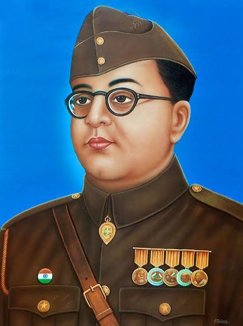

Subhas Chandra Bose[d] (23 January 1897 18 August 1945) was an Indian anti-colonial nationalist whose defiance of British authority in India made him a hero among many Indians,[h] but his wartime alliances with Nazi Germany and the Empire of Japan left a legacy vexed by authoritarianism,[l] antisemitism,[r] and military failure.The honorific Netaji (Hindustani for "Respected Leader") was first applied to Bose in Germany in early 1942 by the Indian soldiers of the Indische Legion and by the German and Indian officials in the Special Bureau for India in Berlin. It is now used throughout India
Bose arrived in Nazi Germany in April 1941, where the leadership offered unexpected but equivocal sympathy for India's independence.[32] German funds were employed to open a Free India Centre in Berlin. A 3,000-strong Free India Legion was recruited from among Indian POWs captured by Erwin Rommel's Afrika Korps to serve under Bose.[33][y] Although peripheral to their main goals, the Germans inconclusively considered a land invasion of India throughout 1941. By the spring of 1942, the German army was mired in Russia and Bose became keen to move to southeast Asia, where Japan had just won quick victories.[35] Adolf Hitler during his only meeting with Bose in late May 1942 agreed to arrange a submarine.[36] During this time, Bose became a father; his wife,[6][z] or companion,[37][aa] Emilie Schenkl, gave birth to a baby girl.[38] Identifying strongly with the Axis powers, Bose boarded a German submarine in February 1943.[39][40] Off Madagascar, he was transferred to a Japanese submarine from which he disembarked in Japanese-held Sumatra in May 1943